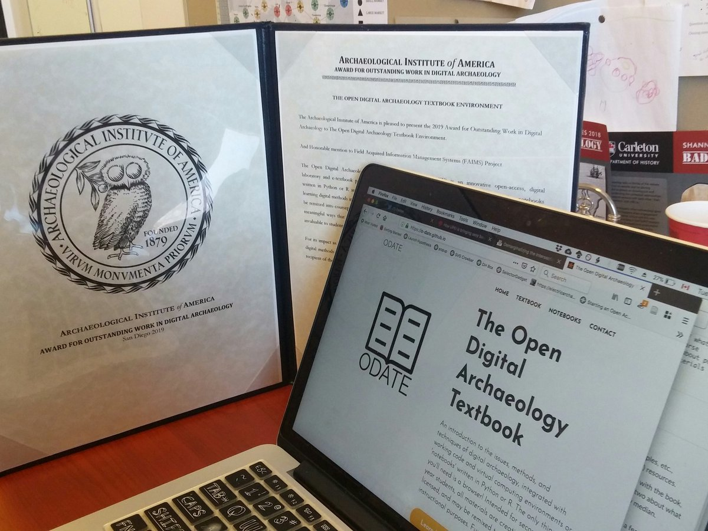

Learning Curve
2019-02-2
It’s been steep
We’ve been pretty quiet in terms of updates because, well, it’s been a helluva learning curve this year. Our other project - the Open Digital Archaeology Textbook Environment - won the AIA Award for Outstanding Work in Digital Archaeology, which was very gratifying as we could use some of what we were learning for this project to help expand that one.

We also hosted a fantastic line up of speakers at Carleton University for the Shannon Lectures in History, on the theme of ‘Bad Archaeology’ - all five lectures were videotaped and can be viewed at the History Department Youtube Channel. All of this was folded into Shawn’s teaching in the fall in the ‘Bad Archaeology’ senior seminar. An interview about our work was published on the front page of the Carleton U website. Damien and I presented our work at a number of places -
September 2018: “Where did you get that?!: A multi-disciplinary investigation of Colonial era and modern Dayak ancestral skull collecting.” 21st Congress of the Indo-Pacific Prehistory Association, Hue, Vietnam.
August 2018: “Taphonomy, Trafficking, and the Forgery of Ethnographic Human Remains.” 8th European Meeting for Forensic Archaeology, Queens University, Belfast.
June 2018: “Fleshing out the Bones: Understanding the human remains trade with computer vision”. Transatlantic Cultural Property Crime Symposium, Queen Mary University of London, London.
April 2018: “Bioarchaeological Approaches to Investigating Supply, Demand and Authenticity in the Colonial-era Human Remains Trade.” Society for American Archaeology conference, Washington, D.C.
Damien also published work related to our project:
Halcrow, S.E., Killgrove, K., Schug, G.R., Knapp, M., Huffer, D., Arriaza, B., Jungers, W., Gunter, J. 2018. On engagement with anthropology: A critical evaluation of skeletal and developmental abnormalities in the Atacama preterm baby and issues of forensic and bioarchaeological research ethics. Response to Bhattacharya et al. “Whole-genome sequencing of Atacama skeleton shows novel mutations linked with dysplasia” in Genome Research, 2018, 28: 423-431. Doi:10.1101/gr.223693.117. International Journal of Paleopathology 22: 97-100.
Huffer, D. 2018. The living and the dead entwined in virtual space: #Bioarchaeology and being a bioarchaeologist on Instagram. Advances in Archaeological Practice 6: 267-273
So what’s the ‘steep’ part of all this? Consider -
- learning how to scrape
- mysql for managing the database
- tensorflow in python for the convolutional neural networks’ work
- convolutional neural networks!
- Deep Convolutional Generative Adversarial Networks
- high performance computing infrastructures
…well, we’ve been reading a lot of Stackoverflow. But we’re also grateful for the work of people like Gene Kogan & Machine Learning for Artists, Douglas Duhaime, and Janelle Shane. We’re also pleased that our first RA, Cristina Wood, signed onboard to work with us!
(DCGAN generated ‘skulls’ - what the computer thinks it sees when we feed it what we’ve collected)